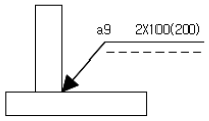
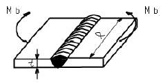

용접산업기사 (2006-08-06 기출문제)
1과목: 용접야금 및 용접설비제도
1. 오스테나이트계 스테인리스강을 용접할 때 고온균열(Hot crack)이 발생하기 쉬운 원인이 아닌 것은?
- 아크 길이가 너무 길 때
- 크레이터 처리를 하지 않았을 때
- 모재가 오염되어 있을 때
- 자유로운 상태에서 용접할 때
(정답률: 78%)

2. 용접분위기 중에서 발생하는 수소의 원(源)이 될 수 없는 것은?
- 플럭스 중의 무기물
- 고착제(물유리 등)가 포함한 수분
- 플럭스에 흡수된 수분
- 대기중의 수분
(정답률: 66%)
3. 금속의 결정격자는 규칙적으로 배열되어 있는 것이 정상적이지만 불완전한 것 또는 결함이 있을 때 외력이 작용하면 불완전한 곳 및 결함이 있는 곳에서부터 이동이 생기는 현상은?
- 쌍위
- 전위
- 슬립
- 가공
(정답률: 67%)
4. 금속에 고온으로 장시간동안 일정한 인장하중을 가하면 시간과 더불어 변형도가 증가되는 현상은?
- 석출
- 공석
- 공정
- 크리프
(정답률: 70%)
5. 금속침투법 중 아연(Zn)을 침투시키는 것은?
- 칼로라이징(Caloriging)
- 실리코나이징(Siliconiging)
- 세라다이징(Sheradizing)
- 크로마이징(Chromizing)
(정답률: 44%)
6. 용접금속 조직의 특징에서 주상정(主狀晶)의 발달을 억제하는 방법으로 가장 적합하지 않은 것은?
- 용접 중에 초음파 진동을 적용하는 방법
- 용접 중에 공기 충격을 적용하는 방법
- 용접 직후에 롤러가공을 적용하는 방법
- 용접 금속 내의 온도 구배를 현저하게 하는 방법
(정답률: 50%)
7. 연납 땜에 주로 사용되는 연납의 성분은?
- 아연 + 납
- 주석 + 납
- 구리 + 납
- 알루미늄 + 납
(정답률: 60%)
8. 특수한 구면상의 선단을 갖는 해머(hammer)로서 용접부를 연속적으로 타격해 줌으로서 용접 표면에 소성 변형을 생기게 하는 것은?
- 노내 풀림법
- 국부 풀림법
- 저온응력 완화법
- 피닝 법
(정답률: 86%)
9. 금속의 결정 구조에서 결정의 성장 중 수지상 결정(樹枝狀 結晶)에 해당하는 것은?
- 덴드라이트
- 공석강
- 면심 입방 격자
- 치환형 고용체
(정답률: 35%)
10. 내부 응력의 제거 또는 열처리 ㆍ 가공 등으로 인하여 경화된 재료의 연화 및 균열화를 위해 강재를 적당한 온도로 가열하여 일정 시간 유지 후, 노 안에서 서냉하는 열처리는?
- 어닐링
- 플러링
- 퀜칭
- 스웨이징
(정답률: 75%)
11. 기계제도에서 물체의 보이지 않는 부분을 나타내는 성의 종류는?
- 가는 실선
- 일점 쇄선
- 이점 쇄선
- 가는 파선
(정답률: 66%)
12. 도면을 마이크로 필름에 촬영하거나 복사할 때에 편의를 위하여 윤곽선 중앙으로부터 용지의 가장자리에 이르는 굵기 0.5[㎜]의 수직선으로 그은 선은?
- 중심 마크
- 비교 눈금
- 도면의 구역
- 재단 마크
(정답률: 57%)
13. 기계재료의 재질을 표시하는 기호 중 기계 구조용강을 나타내는 기호는?
- AI
- SM
- Bs
- Br
(정답률: 87%)
14. 대상물의 구멍, 홈 등과 같이 한 부분의 모양을 도시하는 것으로 충분한 경우에 그 부분만을 그리는 투상도는?
- 정투상도
- 회전 투상도
- 사투상도
- 국부 투상도
(정답률: 73%)
15. 그림과 같은 용접도시기호에 의하여 용접할 경우 설명으로 틀린 것은?

- 화살표쪽에 필릿용접한다.
- 목두께는 9[㎜]이다.
- 용접부의 개수는 2개 이다.
- 용접부 길이는 200[㎜]이다.
(정답률: 66%)
16. 일반적인 판금전개도를 그릴 때 전개 방법이 아닌 것은?
- 사각형 전개법
- 평행선 전개법
- 방사선 전개법
- 삼각형 전개법
(정답률: 64%)
17. 용접부의 비파괴검사(NDT) 기본기호중에서 잘못 표기된 것은?
- RT : 방사선 투과 시험
- UT : 초음파 탐상 시험
- MT : 침투탐상 시험
- ET : 와류탐상 시험
(정답률: 70%)
18. 대상물의 일부를 파단한 경계 또는 일부를 떼어낸 경계를 표시하는데 사용하는 선은?
- 해칭선
- 절단선
- 가상선
- 파단선
(정답률: 62%)
19. 평명이면서 복잡한 윤곽을 갖는 부품일 경우 물체의 표면에 기름이나 광명단을 얇게 칠하고 그 위에 종이를 대고 눌러서 실제의 모양을 뜨는 방법은?
- 프린트법
- 모양뜨기법
- 프리핸드법
- 사진법
(정답률: 75%)
20. 3각법에서 물체의 위에서 내려다 본 모양을 도면에 표현한 투상도는?
- 정면도
- 평면도
- 우측면도
- 좌측면도
(정답률: 90%)
2과목: 용접구조설계
21. 한 개의 용접봉으로 살을 붙일만한 길이로 구분해서, 홈을 한 부분씩 여러 층으로 쌓아 올린 다음, 다른 부분으로 진행하는 용착법은?
- 개스케이드법
- 빌드업법
- 전진블록법
- 스킵법
(정답률: 35%)
22. 용착금속의 충격시험에 대한 설명 중 옳은 것은?
- 시험편의 파단에 필요한 흡수에너지가 크면 클수록 인성이 크다.
- 시험편의 파단에 필요한 흡수에너지가 작으면 작을수록 인성이 크다.
- 시험편의 파단에 필요한 흡수에너지가 크면 클수록 취성이 크다.
- 시험편의 파단에 필요한 흡수에너지는 취성과 상관 관계가 없다.
(정답률: 45%)
23. 용접 후 처리에서 외력만으로 소성변형을 일으켜 변형을 교정하는 것은?
- 박판에 대한 점 수축법
- 가열 후 해머로 두드리는 법
- 롤러에 거는 법
- 형재에 대한 직선 수축법
(정답률: 52%)
24. 금속의 응고 과정에서 발출된 기체가 빠져 나가지 못하여 생긴 결함을 무엇이라고 하는가.
- 슬래그
- 설파 프린트
- 홀인
- 기공
(정답률: 86%)
25. 다음 중 용접입열을 미치는 중요인자가 아닌 것은?
- 아크전압
- 용접전류
- 용접속도
- 용접봉의 길이
(정답률: 83%)
26. 용접을 기계적 이음과 비교할 때 그 특징에 대한 설명으로 틀린 것은?
- 이음효율이 대단히 높다.
- 수밀, 기밀을 얻기 쉽다.
- 응력집중이 생기지 않는다.
- 재료의 중량을 절약할 수 있다.
(정답률: 77%)
27. T 이음 등에서 강의 내부에 강판 표면과 평행하게 층상으로 발생되는 균열로 주요 원인은 모재의 비금속 개재물인 것은?
- 재열균열
- 루트균열(root crack)
- 라멜라테어(lamellar rear)
- 래미네이션균열(lamination crack)
(정답률: 52%)
28. 용접부의 시험에서 확산성 수소량을 측정하는 방법은?
- 기름 치환법
- 글리세린 치환법
- 수분 치환법
- 충격 치환법
(정답률: 49%)
29. 필릿 용접 이음부의 강도를 계산할 때 기준으로 삼아야 하는 것은?
- 루트 간격
- 각장 길이
- 목의 두께
- 용입 깊이
(정답률: 63%)
30. 각변형(角變形)이 가장 적게 일어나는 용접홈의 형태는?
- V 형
- X 형
- J
- I
(정답률: 53%)
31. 용접봉의 용융속도는 무엇으로 나타내는가?
- 단위 시간당 용융되는 용접봉의 길이 또는 무게
- 단위 시간당 용착된 용착금속의 량
- 단위 시간당 소비되는 용접기의 전력량
- 단위 시간당 이동하는 용접선의 길이
(정답률: 53%)
32. 용접부의 잔류응력 제거 방법에 해당되지 않는 것은?
- 노내 풀림법
- 국부 풀림법
- 피닝
- 코킹
(정답률: 86%)
33. 동일한 탄소강판으로 두께가. 서로 다른 V형 맞대기 용접 이음에서 얇은 쪽의 강판 두께 T1, 두꺼운 쪽의 강판 두께 T2, 인장응력 σt, 용접길이 L 이라면 용접부의 인장하중 P를 구하는 식은?
- P = σt・T2・L
- P = 2σt・T2・L
- P = σt・T1・L
- P = 2σt・T1・L
(정답률: 41%)
34. 탄소당량에 대한 설명으로 틀린 것은?
- 탄소당량에 미치는 영향은 탄소가 가장 크다.
- 단소당량이 커질수록 열영향부는 쉽게 경화된다.
- 탄소당량이 커질수록 용접성이 좋아진다.
- 탄소당량이 커지면 예열온도를 높일 필요가 있다.
(정답률: 71%)
35. 그림과 같은 용접이음에서 굽힘 응력을 σb 라하고, 굽힘 단면계수를 Wb라 할 때, 굽힘 모멘트 Mb를 구하는식은?

- M b = σb ・W b
- M b = σb / W b
- M b = (σb ・W b) /l
- M b = (σb ・W b ) / t
(정답률: 45%)
36. 용접 설계에서 허용응력을 올바르게 나타낸 공식은?
- 허용응력 = 안전율/이완력
- 허용응력 = 인장강도/안전율
- 허용응력 = 이완력/안전율
- 허용응력 = 안전율/인장강도
(정답률: 70%)
37. 오스테나이트계 스테인레스강을 용접할 때, 용접하여 가열한 후 급냉시키는 이유로 가장 적합한 것은?
- 고온크랙(crack)을 예방하기 위하여
- 기공의 확산을 막기 위하여
- 용접 표면에 부착한 피복제를 쉽게 털어내기 위하여
- 입계부식을 방지하기 위하여
(정답률: 48%)
38. 용접부에 대한 변형의 경감 및 교정에서, 도열법(導熱法)의 설명은?
- 용접 금속 및 모재의 수축에 대하여 용접전에 반대 방향으로 굽혀 놓는 것이다.
- 용접부에 구리로 된 덮개판을 두든지, 뒷면에서 용접부 근처에 물이 묻은 석면을 두고, 모재에 용접 입열을 막는 것이다.
- 공작물을 가접 또는 지그 호울더 등으로 장착하고 변형의 발생을 억제하는 방법이다.
- 용접직후 해머로 비드를 두드려서 용접금속의 변형을 방지하는 방법이다.
(정답률: 81%)
39. V형 맞대기 용접(완전용입)에서 용접선의 유효길이가 300㎜이고, 용접선에 수직하게 인장하중 13500 ㎏f이 작용 하면 연강판의 두께는 몇 ㎜인가? (단, 인장응력은 5 ㎏f/mm2 임)
- 25
- 16
- 12
- 9
(정답률: 53%)
40. 본 용접을 시행하기 전에 좌우의 이음 부분을 일시적으로 고정하기 위한 짧은 용접은?
- 후용접
- 가용접
- 점용접
- 선용접
(정답률: 92%)
3과목: 용접일반 및 안전관리
41. 핸드 실드나 헬밋의 차광 유리 앞에 보통유리를 끼우는 이유로 가장 적합한 것은?
- 차광유리를 강하게 하기 위해
- 차광유리를 보호하기 위해
- 자외선을 방지하기 위해
- 작업상황을 쉽게 보이기 위해
(정답률: 83%)
42. 전기 저항용접에서 발생하는 열량 Q[㎈]와 전류 I[A] 및 전류가 흐르는 시간 t[sec] 일때 다음 중 올바른 식은?
- Q = 0.24IRt
- Q = 0.24I2Rt
- Q = 0.24IR2it
- Q = 0.24I2R2t
(정답률: 64%)
43. 업셋(up set)용접과 비슷한 것으로 용접할 2개의 금속 단면을 가볍게 접촉시켜 대전류를 통하여 집중적으로 접촉점을 가열하여 용접면에 강한 압력을 주어 압접하는 것은?
- 가스용접
- 플래시용접
- 레이져용접
- 스텃용접
(정답률: 58%)
44. 피복 아크 용접 작업에서 용접조건에 관한 설명으로 틀린 것은?
- 아크 길이가 길면 아크가 불안정하게 되어 용융금속의 산화나 질화가 일어나기 쉽다.
- 좋은 용접을 얻기 위해서 원칙적으로 긴 아크로 작업한다.
- 아크 길이가 너무 짧으면 피복제나 불순물이 용융지에 섞여 들어가기 쉽다.
- 용접속도를 운봉속도 또는 아크속도 라고도 한다.
(정답률: 78%)
45. 산소용기의 용량이 30리터이다. 최초의 압력 150 kgf∙cm2 이고, 사용 후 100 kgf∙cm2 으로 되면 몇 리터의 산소가 소비 되는가?
- 1020
- 1500
- 3000
- 4500
(정답률: 52%)
46. 용접 작업 중 정전이 되었을 때, 취해야 할 가장 적절한 조치는?
- 전기가 오기만을 기다린다.
- 홀더를 놓고 송전을 기다린다.
- 홀더에서 용접봉을 빼고 송전을 기다린다.
- 전원을 끊고 송전을 기다린다.
(정답률: 79%)
47. 유전, 습지대에서 분출되며 메탄을 주성분으로 하나, 그 조성은 산지 또는 분출시기에 따라 다른 용접용 가스는?
- 수소가스
- 천연가스
- 도시가스
- LP가스
(정답률: 63%)
48. 가스 절단시 절단면에 나타나는 일정간격의 평행 곡선을 의미하는 것은?
- 절단면의 아크 방향
- 가스 궤적
- 드래그 라인
- 절단속도의 불일치에 따른 궤적
(정답률: 82%)
49. 잠호용접법에서 다전극 용접 중 두개의 와이어(직류와 직류, 교류와 교류)를 똑같은 전원에 접속하여 비드 폭이 넓고, 용입이 깊은 용접부를 얻기 위한 방식은?
- 탠덤식
- 횡병렬식
- 횡직렬식
- 종직렬식
(정답률: 43%)
50. 40[kVA]의 교류아크 용접기의 전원 전압은 200[V]일때 전원스위치에 넣을 퓨즈의 용량은 몇 [A]인가?
- 50
- 100
- 150
- 200
(정답률: 55%)
51. 저수소계 용접봉으로 용접작업하기 직전에 어떻게 하는 것이 가장 좋은가?
- 구매할 때 들어온 포장박스(BOX) 그대로 뜯지 않고 보관한 후 바로 용접한다.
- 용접봉 관리 창고에서 포장박스를 뜯어서 불출하기 쉽게 한곳에 모아둔 후 바로 용접한다.
- 습기를 제거하기 위하여 건조로 속에 넣어 일정시간 일정온도를 유지 시킨 후 바로 용접한다.
- 포장 박스를 뜯어서 용접봉을 끄집어 낸 후 비닐로 용접봉을 덮어 둔 후 바로 용접한다.
(정답률: 90%)
52. 에어코우매틱(air comatic) 용접법, 시그마(sigma)용접법, 필러아크 용접법 등의 상품명으로 불리는 것은?
- TIG 용접법
- 테르밋 용접법
- MIG 용접법
- 심(seam) 용접법
(정답률: 44%)
53. 탄산가스 아크 용접의 용접전류가 400[A] 이상일 때 다음 중 가장 적합한 차광도 번호는?
- 8
- 10
- 5
- 14
(정답률: 85%)
54. 연강용 피복아크 용접봉으로 용접시 용착금속에 좋은 강인성, 기계적 성질, 내균열성을 주며 피복제 중에 석회석이나 형석이 주성분으로 사용되는 것은?
- 일미나이트계 용접봉
- 고산화티탄계 용접봉
- 저수소계 용접봉
- 고셀룰로스계 용접봉
(정답률: 79%)
55. 연납땜의 설명으로 다음 중 가장 적합한 것은?
- 땜납의 융점이 450 ℃ 이하
- 땜납의 융점이 300 ℃ 이하
- 땜납의 융점이 150 ℃ 이하
- 땜납의 융점이 100 ℃ 이하
(정답률: 74%)
56. 직류 역극성(reverse polarity) 용접에 대한 설명이 옳은 것은?
- 용접봉을 음극(-), 모재를 양극(+)에 설치한다.
- 용접봉의 용융 속도가 느려진다.
- 모재의 용입 (penetration)이 깊다.
- 얇은 판의 용접에서 용락을 피하기 위하여 사용한다.
(정답률: 59%)
57. 피복아크 용접에서 부하(負荷)전류가 증가하면 단자(端子)전압이 낮아지는 특성은?
- 정전압 특성
- 수하특성
- 상승특성
- 동전류 특성
(정답률: 69%)
58. 일반적인 교류 아크 용접기의 2차측 무부하 전압은?
- 50 ~ 60 V
- 70 ~ 80 V
- 90 ~ 100 V
- 100 ~ 110 V
(정답률: 64%)
59. 2개의 물체를 충분히 접근시키면 그들 사이에 원자사이의 인력이 작용하여 결합하는 데 이 때 원자 사이의 거리는 어느 정도 접근해야 하는가?
- 0.001 (㎛)
- 10-6(㎝)
- 10-8(㎝)
- 0.0001 (㎜)
(정답률: 74%)
60. 정격 2차 전류가 600[A]인 용접기의 정격 사용률이 40%, 허용사용률이 57.6%였다면, 실제 용접 작업시의 용접 전류는 몇 [A]인가?
- 500
- 600
- 700
- 800
(정답률: 47%)